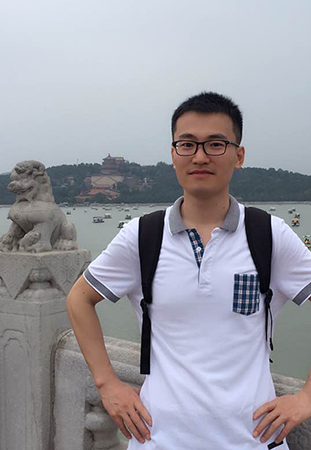

|  |
Jinfeng Guo (a.k.a Jerry) Tel: +31 (0)6 47 96 88 63 Email: j.guo3@students.uu.nl |
I am a second year master student doing the Game and Media Technology program at Utrecht University, the Netherlands. I am currently searching for a PhD position in the field of rendering.
I am from China. I got my B.Sc in Computer Science and Technology from Dalian University of Technology, China in 2012. I did my internship at Crystal CG Dalian Branch during my senior year of bachelor's. After my bachelor's I started working at Betop Multimedia, Dalian, where I worked as a Technical Director for three years. In September, 2015, I started my Master's at Utrecht University, the Netherlands.
Here is a brief cv of me. More about me.
My research interests include:
I do not yet have any publications, but I do have some work from some of the previous projects. They can be a good demo of my potential research capability.
Non-research stuff: